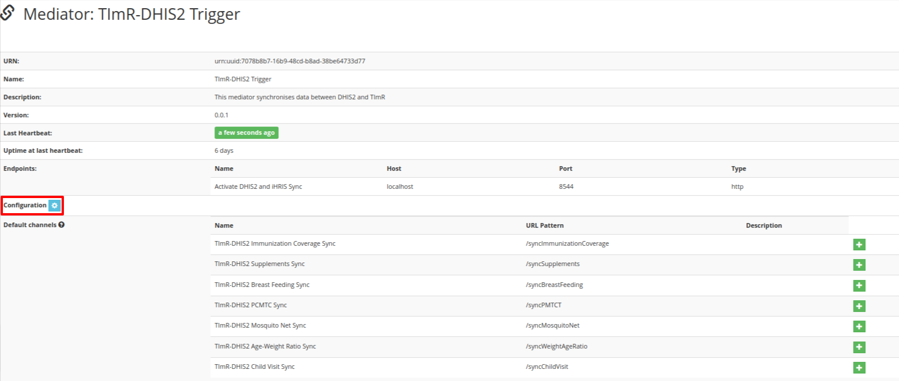
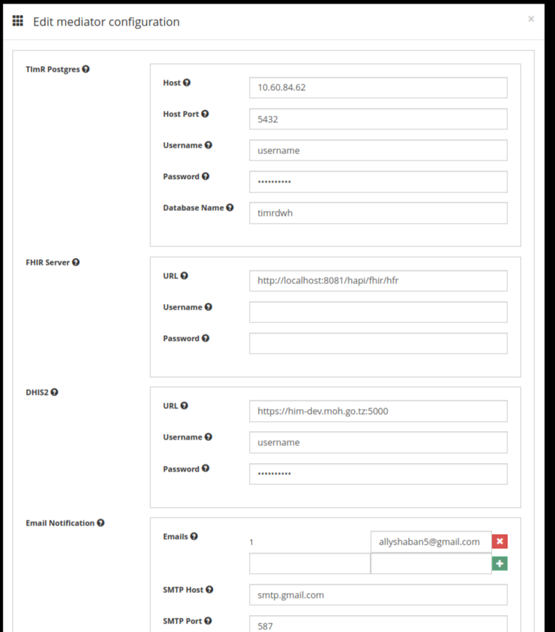

Configuring The Mediator¶
- Configuration to connect the mediator with openHIM
inside the mediator, use your preffered text editor and open config.json under config folder
vim config/config.json
Below is the content of config.json
{ "api": { "username": "root@openhim.org", "password": "openhim-password", "apiURL": "https://localhost:8080", "trustSelfSigned": true }, "register": true }
Change username and password to a real account that can connect to openHIM
If the mediator and openHIM are on different servers, then you will need to change the apiURL
You need to start the mediator with below commands before you can proceed with the rest of the configurations
cd openhim-mediator-timr-dhis2-tz
node index.js
- Configuration parameters of the mediator with TImR and DHIS2 credentials
Login to openHIM and click the mediators link Click to open the TImR-DHIS2 Trigger mediator
Click the gear icon next to configuration to open the configuration page that looks as below
TImR Postgres section defines credentials needed to get data from the TImR warehouse
Host: Warehouse base URL
Host Port: Warehouse port number
Username: Warehouse username
Password: Warehouse password
Database Name: Warehouse database name
- FHIR Server section defines credentials for querying the facility mapping tool
URL: Base URL of the matching tool
Username: Username that has privileges to query FHIR resources to the matching tool
Password: Password that has privileges to query FHIR resources to the matching tool
DHIS2 section defines credentials required to push data to DHIS2.
URL: is the DHIS2/national HIM base URL. If DHIS2 is behind national HIM then this should be the national HIM base URL
username: is the user that has permission to push data to DHIS2 directly or via national HIM if DHIS2 is behind national HIM
password: is the password of the user that has permission to push data to DHIS2 directly or via national HIM if DHIS2 is behind national HIM
Email Notification section defines credentials for sending emails and email addresses to receive mediator notifications
{kind=link}